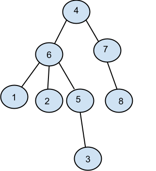

Problema I
Prin inaltimea unui arbore cu radacina intelegem numarul de muchii ale celui mai lung lant format din noduri distincte care are una dintre extremitati in radacina arborelui. Scrieti care este inaltimea si care sunt frunzele arborelui descris prin urmatorul vector "de tati":
1 2 3 4 5 6 7 8
(6,6,5,0,6,4,4,7)
INALTIME: Nivelul 4
FRUNZE: 1,2,3,8
Problema II
Cate frunze are arborele cu radacina descris prin urmatorul vector "de tati":
1 2 3 4 5 6 7 8 9 10 11
(6,5,5,2,0,3,3,3,8,7,7)
a. 1 b. 2 c. 5 d. 4
Problema III
Pentru arborele cu radacina avand urmatorul vector "de tati" tata=(2,0,2,3,2,3,4,4,3), care este radacina arborelui si care sunt descendentii directi (fiii) nodului 3?
Radacina: 2
Descedenti directi ai nodului 3: 4,6,9